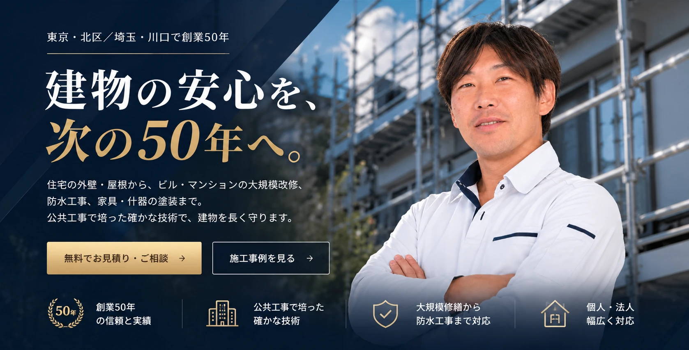

建物の安心を、次の50年へ。東京・北区／埼玉・川口で創業50年の塗装会社 株式会社昭和建装


東京・北区／埼玉・川口で創業50年
建物の安心を、
次の50年へ。
住宅の外壁・屋根から、ビル・マンションの大規模改修、
防水工事、家具・什器の塗装まで。
公共工事で培った確かな施工で、建物を長く守ります。
- 50年創業からの実績
- 公共工事施工実績多数
- 関東一円東京・埼玉・千葉・神奈川
- 年中無休受付 9:00〜17:00
施工実績
上野動物園「新ジャイアントパンダ舎」の塗装を担当しました。
2020年にオープンした上野動物園の新しいジャイアントパンダ舎。その工事事業者として、塗装部門を株式会社昭和建装が担当し、建設経済新聞（2020年10月21日）の紹介記事にも掲載されました。
多くの方が訪れる公共施設は、仕上がりはもちろん、工程や安全管理にも厳しい基準があります。こうした現場で積み重ねてきた経験を、住宅やマンションの工事にもそのまま活かしています。


建設経済新聞 2020年10月21日掲載
BUSINESS
事業のご案内
建設会社・管理会社様からのご依頼も、ご自宅の塗り替えも。どちらもお任せください。


NEWS
お知らせ
- 上野動物園「新ジャイアントパンダ舎」の工事で、建設経済新聞に掲載されました。
- 「昭和建装TV」を配信しました。
- 「東京の社長TV」で弊社が紹介されました。